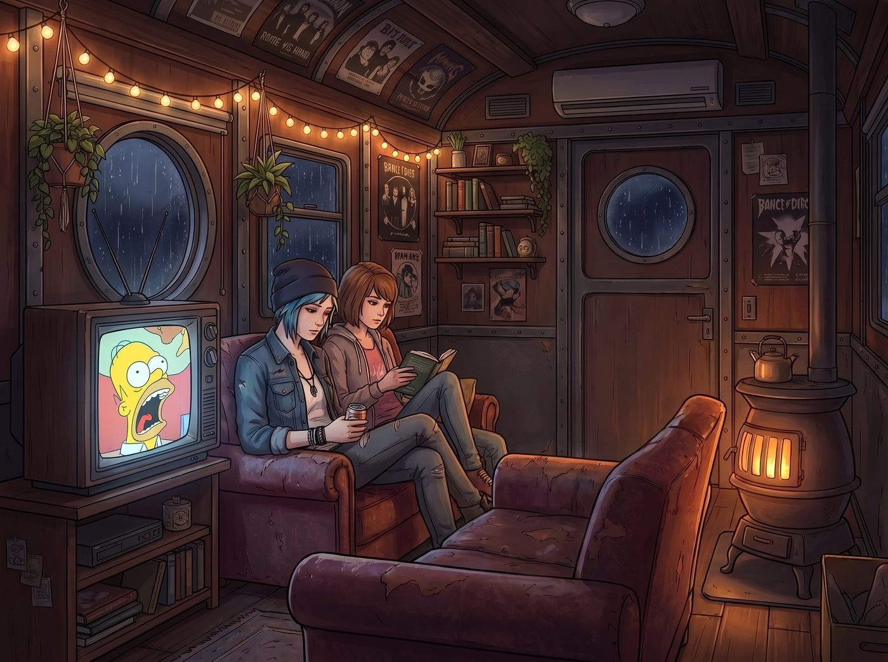

較小的惡（終）：交託

電視裡的黃色海綿還在尖叫，但沙發上的 Chloe 和 Max 根本沒有在看。Chloe 盯著手中的可樂罐，腦海裡一直重播著電影最後那一幕：那個冷血的長官拔出槍，像一條瘋狗一樣命令 H 繼續折磨孩子。而 H，那個從頭到尾精於算計、手染鮮血的審訊專家，卻在這個決定世界存亡的瞬間，越過了黑洞洞的槍口，靜靜地看著崩潰的女主角 Brody。
H 其實早就做出了選擇。他把最終的裁決權，交給了他唯一願意相信的人。
「這不就是那個燈塔嗎？」Chloe 突然壓低聲音，打破了她與 Max 之間的沉默。
Max 的身體微微一僵。
Chloe 轉過頭，藍色的眼睛在昏暗的車廂裡閃爍著複雜的光芒。「那個拿槍的長官，就是阿卡迪亞灣上空的龍捲風，是那個操蛋的『命運』或者『大局』。它拿槍指著我們的頭，要求我們做算術題。18 除以 4.5 等於 4，犧牲一個藍髮混混等於拯救整個小鎮。數學多麼完美。」
她停頓了一下，伸手輕輕覆蓋在 Max 微微發抖的手背上。
「但我沒有拿槍指著妳，Max。就像 H 沒有聽從那個長官一樣。」Chloe 的聲音放得很輕，卻重重地砸在 Max 的心上，「在那個懸崖上，我把這道操蛋的選擇題交給了妳。我告訴妳，無論妳怎麼選，我都接受。因為在那一刻，我相信妳的判斷，勝過相信這世界上所有的數學和法則。」
Max 反手緊緊握住了 Chloe 的手。她的眼眶泛紅，那是她心底最深的一道傷疤，也是她們兩人之間最無堅不摧的羈絆。
電影裡的 H 放棄了邏輯，選擇了 Brody 的人性，最終的代價是第四顆炸彈的倒數歸零；而燈塔上的 Max 放棄了系統的「最優解」，選擇了 Chloe 的生命，代價是身後被風暴吞噬的小鎮。
當然，那是另一條時間線裡的結局。在她們現在活著的這一條裡，那道選擇題最後被撕碎了，阿卡迪亞灣和 Chloe 都留了下來。但燈塔上那一刻，那種必須親手在兩者之間選一個的重量，Max 從來沒有真正放下過。所以她看得懂 Brody，也看得懂 H。
「這就是為什麼我們沒有辦法認同電視上那個情報局長，也沒有辦法真正恨 Brody。」Max 靠在 Chloe 的肩膀上，聲音微微沙啞，「長官們、政客們，他們永遠只看得到『數字』和『結果』。他們用槍指著別人的頭來維持系統的運作，強迫你選擇 Lesser Evil。但 H 最後看 Brody 的那個眼神……那不是在推卸責任，那是在說：『我知道世界要毀滅了，但如果這是妳作為一個人的底線，我陪妳一起承擔這個毀滅。』」
這是一場關於「交託」的悲劇，卻也是絕境中最高級的浪漫。
工作站前的 Lily 停止了敲打鍵盤的動作。她顯然聽到了沙發上的低語。
「從博弈論的角度來看，」Lily 轉過轉椅，推了推眼鏡，語氣裡少見地帶上了一絲溫柔，「H 的行為被稱為『非理性信任（Irrational Trust）』。在一個完美的理性系統中，這是致命的。但人類之所以沒有變成只會計算得失的機器，正是因為這種非理性的存在。」
Lily 看著 Max 和 Chloe 緊握的手。她想起了自己，她也曾是那個只會計算、被父母植入各種最優解演算法的機器，直到這節車廂裡的女孩們，用一種近乎盲目的包容，讓她學會了放下那些冰冷的防禦機制。如果不是出於對這群人的「非理性信任」，她絕不會冒險去管那樁跟自己無關的勒索案。
「所以，去他的 18 除以 4.5。」Chloe 嘴角勾起一抹叛逆的笑，把頭靠在 Max 的發旋上，「如果世界真的要因為我們守住了那點該死的底線而爆炸，那就讓它爆吧。至少在爆炸的時候，我們是自己選的，而且我們在一起。」
Max 輕輕「嗯」了一聲。電視裡的海綿寶寶發出滑稽的笑聲，暖爐的紅光依然溫暖。炸彈或許還在某個角落倒數，但至少在這個瞬間，這兩條經歷過風暴的鹹魚，比任何人都清楚自己為什麼而活。